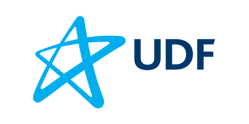

PORTFÓLIO PESSOAL
Olá, eu sou Guilherme.
Estudante de Tecnologia e Engenharia
Interessado em programação, tecnologia, desenvolvimento de software e automação.
Sobre mim
Estudante de Ciência da Computação e Engenharia Mecatrônica, com interesse em tecnologia, desenvolvimento de software e resolução de problemas. Conhecimentos em programação, matemática aplicada e desenvolvimento web, com foco no aprendizado contínuo e na aplicação prática dos conhecimentos adquiridos durante a formação acadêmica.
Formação acadêmica
Ciência da Computação
UDF
2025/1Engenharia Mecatrônica
Universidade de Brasília (UnB)
2025/2Ciência da Computação
UDF
Estudante de Ciência da Computação no Centro Universitário do Distrito Federal (UDF), com ingresso em 2025/1. A graduação abrange fundamentos da computação, lógica de programação e desenvolvimento de software.

Informações adicionais
No curso de Ciência da Computação do Centro Universitário do Distrito Federal (UDF), desenvolvi meus primeiros conhecimentos em desenvolvimento web, com HTML e CSS, além de experiências práticas de programação em C. Também tive meu primeiro contato com bancos de dados, estudando seus fundamentos e aplicações. A graduação proporcionou ainda conhecimentos em Pensamento Computacional e na história da programação, ampliando minha compreensão sobre a evolução da computação e seus principais conceitos.
Engenharia Mecatrônica
Universidade de Brasília
Estudante de Engenharia Mecatrônica na Universidade de Brasília (UnB), com ingresso em 2025/2. A graduação proporciona contato com conceitos de engenharia, programação e matemática aplicada.
Informações adicionais
Durante minha trajetória na Universidade de Brasília (UnB), no curso de Engenharia Mecatrônica, tive contato com diferentes áreas do conhecimento. Entre os conteúdos estudados estão Cálculo, Álgebra, Química e programação em Python, além de conhecimentos relacionados ao sistema operacional Linux. Essa experiência contribuiu para ampliar minha base em matemática, ciências e tecnologia, proporcionando contato com diferentes ferramentas e conceitos da engenharia.
Habilidades
Projetos
Atividades em C
Exercícios de programação envolvendo vetores, matrizes, funções e estruturas de repetição.
Ver no GitHub →Projetos pessoais
Espaço destinado a projetos e aplicações desenvolvidos durante meus estudos.
Ver no GitHub →Contato
Entre em contato ou acompanhe meus projetos.